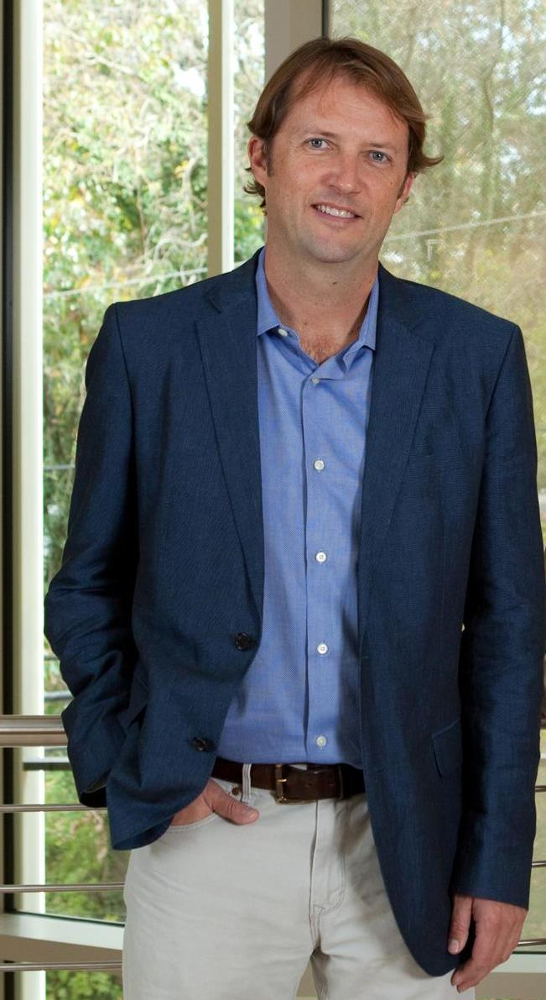

 |
Scott T. Acton
VIVA Affiliation2000 - Present Personal InfoDegreesM.S. Electrical and Computer Engineering, University of Texas at Austin B.S. Electrical Engineering, Virginia Tech Biographical SketchHe has worked in industry for AT&T, the MITRE Corporation and Motorola, Inc. and in academia for the University of Virginia and Oklahoma State University. Acton has received the following awards: the ARO Young Investigator Award, the Halliburton Outstanding Young Faculty Award, the Eta Kappa Nu Outstanding Young Electrical Engineer -- a national award that has been given annually since 1936, the Outstanding New Teacher Award, the All University Teaching award and several best paper awards. Prof. Acton has served several terms as Associate Editor for the IEEE Transactions on Image Processing and served as an AE for IEEE Signal Processing Letters. Prof. Acton was the 2004 Technical Program Chair and the 2006 General Chair of the Asilomar Conference on Signals, Systems and Computers; he serves on the Steering Committee of Asilomar. He was the 2008 Technical Co-Chair and the 2010 General Co-Chair for the IEEE SW Symposium on Image Analysis and Interpretation. Prof. Acton serves on two IEEE technical committees: the IEEE Image, Video, and Multidimensional Signal Processing Technical Committee and the IEEE Bioimaging and Signal Processing Technical Committee. He is the General Co-Chair for the 2018 IEEE International Symposium on Biomedical Imaging. TeachingResearch InterestsFunded Research
|